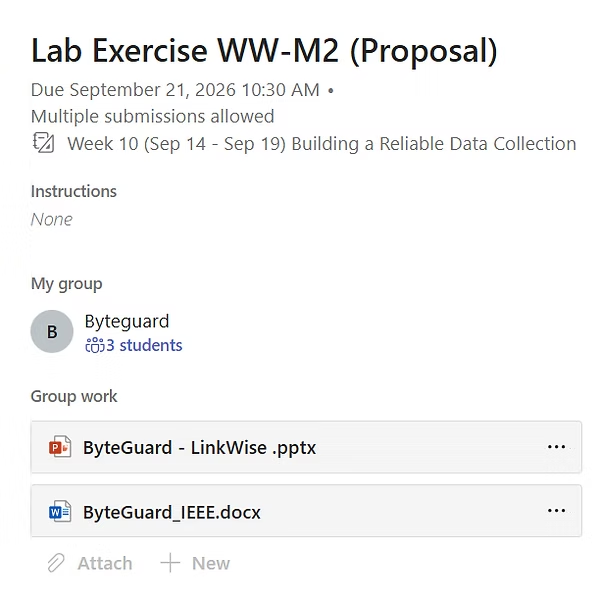
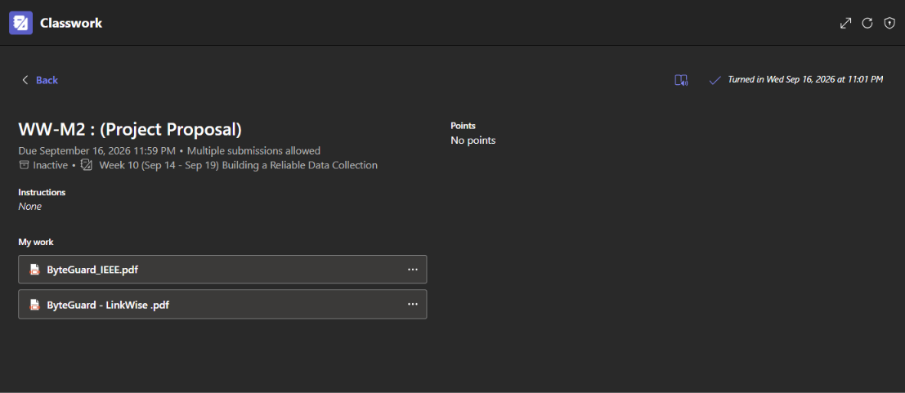
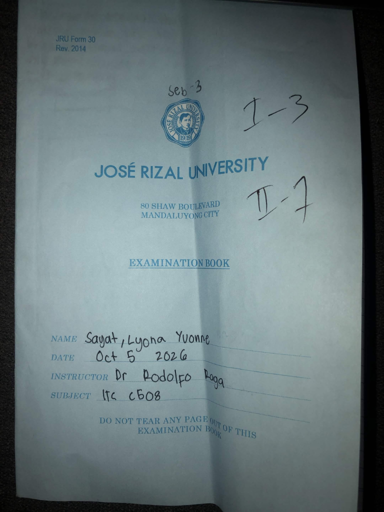

Submitted Outputs
Microsoft Teams Submission Screenshot
Google Colab Notebook
PT_M1_Sayat_Lyona.ipynb
PT_M1_Sayat_Lyona.ipynb ↓
Open in Google Colab ↗
IEEE Research Paper (PT_M1_Sayat_Lyona)
PT_M1_Sayat_Lyona.pdf
Open PDF in New Tab ↗ Download PT_M1_Sayat_Lyona.pdf ↧Submitted Outputs
Microsoft Teams/Classwork Submission
Submitted Outputs

PowerPoint Presentation
ByteGuard - LinkWise (3).pptx
Download ByteGuard - LinkWise (3).pptx ↧IEEE Research Paper
ByteGuard_IEEE.pdf
Open PDF in New Tab ↗ Download ByteGuard_IEEE.pdf ↧Submitted Outputs
Microsoft Teams Submission Screenshot

Updated Research Proposal PDF
ByteGuard_Revise Proposal.pdf
Open PDF in New Tab ↗ Download ByteGuard_Revise Proposal.pdf ↧Submitted Outputs
